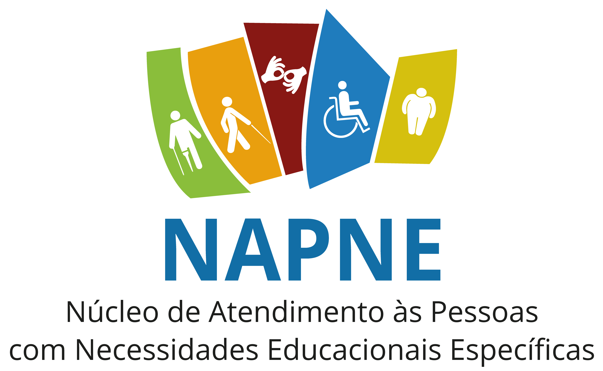
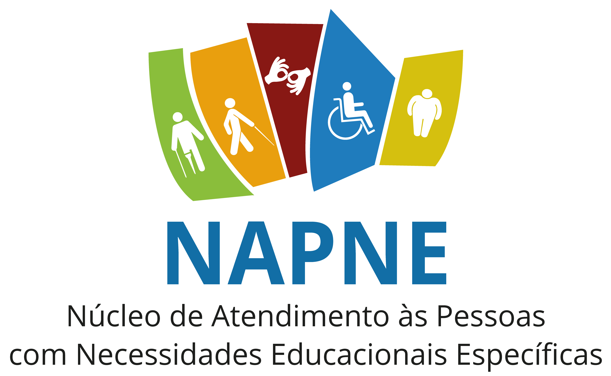

O Núcleo de Atendimento às Pessoas com Necessidades Educacionais Específicas (NAPNE) é responsável pela preparação da instituição para receber pessoas com deficiência nos cursos de Formação Inicial e Continuada (FIC), Cursos Técnicos e Tecnológicos (Lato Sensu e Stricto Sensu).
23 de Abril - Dia Nacional de Educação de Surdos
24 de Abril - Dia Nacional da Língua Brasileira de Sinais
10 de Setembro - Dia Mundial da Língua de Sinais
19 a 25 Setembro - Semana Internacional de Surdos
26 de Setembro - Dia Nacional dos Surdos
30 de Setembro - Dia Internacional do Intérprete de Libras
30 de Setembro - Dia Internacional do Surdo
10 de Novembro - Dia Nacional de Prevenção e Combate à Surdez
30 de Maio - Dia Mundial da Esclerose Múltipla
30 de Agosto - Dia Nacional da Esclerose Múltipla
06 de Outubro - Dia Mundial da Paralisia Cerebral
11 de Outubro - Dia Nacional da Pessoa com Deficiência Física
25 de Outubro - Dia Nacional de Combate ao Preconceito contra as Pessoas com Nanismo
16 de Novembro - Dia Nacional dos Ostomizados
21 de Março - Dia Internacional da Síndrome de Down
21 a 28 de Agosto - Semana Nacional da Pessoa com Deficiência Intelectual e Múltipla
22 de Agosto - Dia da Pessoa com Deficiência Intelectual
18 de Maio - Dia Nacional da Luta Antimanicomial
10 de Outubro - Dia Mundial da Saúde Mental
10 de Outubro - Dia Nacional dos Direitos da Pessoa com Transtorno Mental
25 de Janeiro - Dia Mundial de Combate a Hanseníase e Dia Nacional de Combate e Prevenção da Hanseníase
28 ou 29 de Fevereiro - Dia Mundial das Doenças Raras
27 de Junho - Dia Mundial da Surdocegueira
21 a 28 de Agosto - Semana Nacional da Pessoa com Deficiência Intelectual e Múltipla
14 de Novembro - Dia Mundial do Diabetes e Dia Nacional de Combate a Diabetes
04 de Janeiro - Dia Mundial do Braille
08 de Abril - Dia Nacional do Sistema Braille
25 de Abril - Dia Internacional do Cão Guia
26 de Maio - Dia Nacional de Combate ao Glaucoma
10 de Julho - Dia Mundial da Saúde Ocular
08 de Outubro - Dia Mundial da Visão
13 de Dezembro - Dia Nacional do Cego
02 de Abril - Dia Mundial de Conscientização sobre o Autismo
18 de Junho - Dia do Orgulho Autista
10 de Agosto - Dia Internacional da Superdotação
10 de Agosto - Dia Estadual da Pessoa com Altas Habilidades/Superdotação
21 a 28 de Agosto - Semana Estadual da Pessoa com Deficiência
21 de Setembro - Dia Nacional de Luta das Pessoas com Deficiência
03 de Dezembro - Dia Internacional da Pessoa com Deficiência
05 de Dezembro - Dia da Acessibilidade
10 de Dezembro - Dia da Inclusão Social
22 de Setembro - Dia do Atleta Paraolímpico
19 de Setembro - Dia Nacional do Teatro Acessível
10 de Dezembro - Dia da Declaração Universal dos Direitos Humanos ou Dia Internacional dos Direitos Humanos
14 de Abril - Dia Nacional de Luta pela Educação Inclusiva
23 de Abril - Dia Nacional de Educação de Surdos

 
